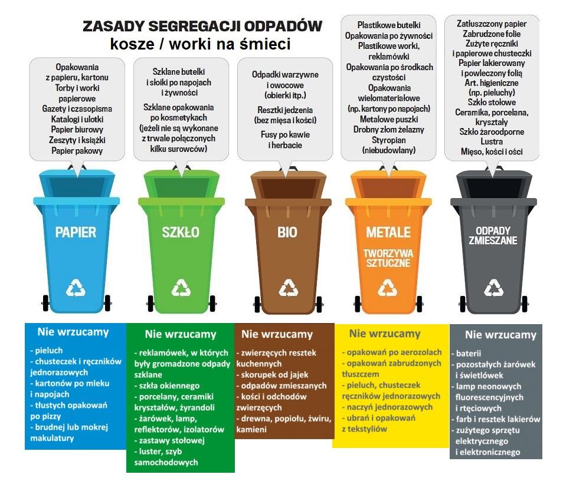

Rozumie się przez to metodę odzysku, w ramach której odpady są przetwarzane na produkty, materiały lub substancje, a następnie ponownie wykorzystywane w pierwotnym lub innym celu. Recykling nie obejmuje odzysku energii oraz ponownego przetwarzania na materiały, które mają być końcowo wykorzystane jako paliwo.
Bezpłatne pozbycie się niepotrzebnych odpadów z gospodarstw domowych. Obniżenie zużycia surowców naturalnych. Redukcja ilości odpadów na wysypiskach. Przetworzenie surowców i materiałów na nowe lub ponowne ich wykorzystanie.
Za recykling uznaje się powtórne wykorzystanie pozyskanych odpadów, które zostają przetworzone, a z uzyskanego w ten sposób materiału stworzony zostaje nowy produkt. Proces recyklingu pozwala na zmniejszenie korzystania ze złóż naturalnych oraz ograniczenie ilości odpadów. Podstawową zasadą recyklingu jest maksymalne wykorzystanie dostępnych odpadów przy jak najmniejszym nakładzie energetycznym i surowcowym. Za logo recyklingu przyjęto trzy strzałki obrazujące przepływ przetwarzanych odpadów.
